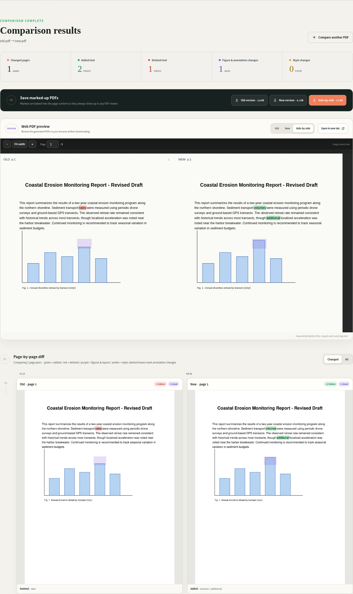

レイアウトを考慮したPDF差分ツール
2つのPDFの違いを、正確に把握する。
kogo(校合)は、改訂版を原本と照合するという意味の、日本の出版用語に由来する名前です。
kogo は、更新前と更新後のPDFを比較し、追加・削除された文字、図、注釈を検出します。 ブラウザ上でも、マーカー入りのPDFとしても確認できます。

主な機能
実際の文書のための差分検出
原稿、スライド、スキャンした書類はそれぞれ扱い方が異なります。kogoは文字単位の差分を取る前に、読み順とページ対応を再構築します。
レイアウトを考慮した読み順
ページ内の空白領域からレイアウトを分析して読み順を再構築するため、段組みやスライドのテキストボックスも正しく比較されます。
CJK文字単位の高精度差分
欧文は単語単位、日中韓(CJK)は文字単位で高精度に差分を検出します。CJK拡張漢字B〜J領域のまれな漢字も含みます。
ページ対応付け
テキストと視覚的なページ特徴の両方を使った類似度ベースの配列アラインメントにより、ページの挿入・削除があっても対応がずれません。
図・レイアウトの視覚差分
図・数式・レイアウトはテキスト領域をマスクして視覚的に比較し、画像だけのページではスキャンや書き出しによる微小なズレも補正します。
注釈の差分検出
PDFに付いたハイライト・コメント・手書き注釈をフィンガープリント化し、追加・削除を別途検出します。
スタイル変更の検出
太字・斜体・文字サイズなど、文字自体は変わっていないスタイルのみの変更を、内容変更とは区別してアンバー色で検出します。
焼き込み済みマーカー
マーカーはページ内容へ直接焼き込まれるため、注釈を表示しない・対応していないビューアでも常に見えます。
文字選択可能なWebプレビュー
Mozilla PDF.jsによるWebプレビューに加え、旧版ハイライトPDF・新版ハイライトPDF・左右比較PDFをダウンロードできます。
ローカル処理・外部送信なし
すべての処理はローカルで行われ、外部サービスには何も送信されません。アカウント登録もクラウド保存も不要です。
クイックスタート
CLI・Webアプリ・Dockerから選択
基本パッケージはCLIとライブラリのみで、Web関連の依存は含まれません。ブラウザUIが必要な場合は serve エクストラかDockerを使ってください。
CLIのみ
差分エンジンとコマンドラインツールをインストールします。Web関連の依存は不要です。
pip install kogo
kogo diff old.pdf new.pdf -o out/Webアプリ
kogo fetch-viewer は、Webプレビューで使うPDF.jsビューアの資産をローカルにダウンロードします。Dockerイメージにはあらかじめ同梱されているため不要です。
pip install "kogo[serve]"
kogo fetch-viewer
kogo serveブラウザで http://127.0.0.1:8080 を開きます。
Docker
初期設定ではコンテナは 127.0.0.1 にのみバインドされます。認証機能は組み込まれていないため、0.0.0.0 へのバインドは信頼できるネットワーク内でのみ行ってください。
docker compose up -d --buildブラウザで http://localhost:8080 を開きます。
ライブラリとして使う
差分エンジンは通常のPython APIです。pip install kogo だけで使えます(Web依存は不要)。
import kogo
result = kogo.compare_pdfs("old.pdf", "new.pdf", "out/")
print(result["summary"])
# out/ に old-highlighted.pdf、new-highlighted.pdf、
# side-by-side.pdf、result.json、ページプレビューが生成されます。kogo.compare_pdfs は、暗号化・空・ページ数超過・読み込み不能などの場合に kogo.ComparisonError を送出します。キーワード引数はCLIと同じです(dpi、sensitivity、max_pages、previews、old_name、new_name)。
pip install kogo だけではCLIとライブラリのみが使えます。ブラウザUIには
serve エクストラ(pip install "kogo[serve]")またはDockerイメージが必要です。
どちらもFastAPI/UvicornとPDF.jsビューア資産を追加します。
ライセンス
AGPL-3.0
kogo は AGPL-3.0 で公開しています。詳細は LICENSE を参照してください。
PyMuPDF(および内部で使われるMuPDF)は AGPL-3.0 または商用ライセンスのデュアルライセンスで配布されています。kogo を再配布したり、ネットワークサービスとして提供する場合は、事前にライセンス条件を確認してください。
クレジット:
- Mozilla PDF.js(Apache-2.0)
- PyMuPDF(AGPL-3.0 または商用ライセンス)
- OpenCV(Apache-2.0)
- FastAPI(MIT)